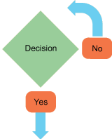
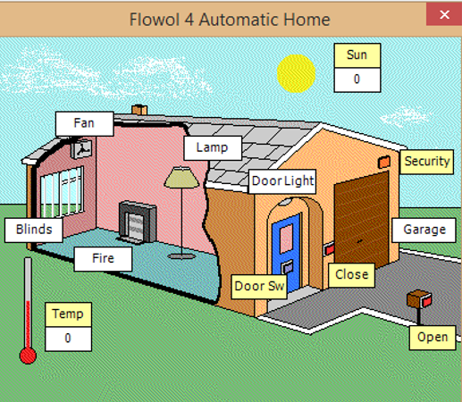
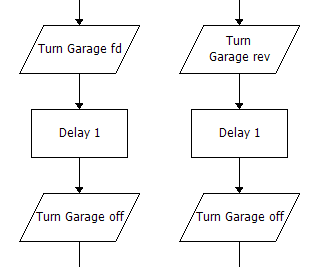
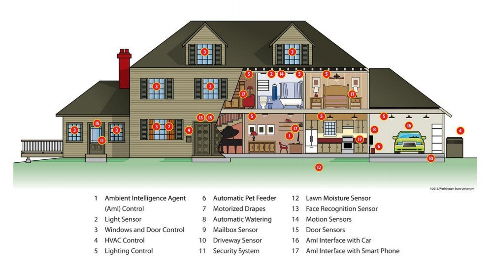

Selection
Grey overlay
Pink
Green
Blue
Cream
Liliac
Purple
Yellow
1 Objectives
Developing Algorithms learning strand, specifically:
- learn how to represent algorithms using flowchart
- Understand how abstraction can help solving complex problems
Developing Programming and Development learning strand, specifically:
- implement solutions using selection and repetition
- develop further understanding that programming bridges the gap between algorithmic solutions and computers
2 Selection
Learn It - Selection
- Last lesson we looked at how sequencing is used to put our solution to a problem in the correct order to solve it.
- Today we are going to continue to use Flowol to use selection to decide what to do in certain situations.
- A diamond box is used when a decision needs to be made, a decision is selecting what to do.
- This might include comparing the input states or comparing a count to a set limit. The outcome of the decision must be either yes or no.

Badge It - Silver
- Your Silver badge task for this lesson is to follow the steps below to automate a home in Flowol.
- Open the Automatic Home mimic in Flowol, it looks like this:

- Make the fan switch on automatically if the temperature in the room goes above 23°C.
- Make the fire switch on automatically if the temperature in the room goes below 17°C.
- Make the inside lamp switch on automatically if the light level (Sun) falls below 20.
- Make the security light above the door turn on automatically if the light level (Sun) falls below 30 AND the security sensor is on.
- Make the garage door open and close when the red Open and Close buttons are pressed.

- If you get stuck on this task click here for some help, but only if you're really stuck!
- When you have finished the task try it out by clicking the play button and interacting with your house to test that it works.
- Then screenshot your flowcharts and upload your work to the Silver badge task on Week 6 of Problem Solving on Bourne to Learn.
- Before you move on make sure to save your Flowol work into your Computer Science/Year 8/Problem Solving folder as "Week 6 Selection Silver".
{kind=link}
3 Using Sensors to Select
Learn It - Sensors
- Sensors are used to measure physical quantities such as temperature, light, pressure, sound, and humidity. They send signals to the processor, processor is short for central processing unit (CPU).
- For example:
- A security alarm system may have an infrared in communications, an infrared beam modulates (switches on/off) to a receiver that interprets the modulations as data sensor which sends a signal when the beam is broken.
- A heat sensitive sensor in the corner of a room may detect the presence of a person.
- Temperature sensors could be used to control the heating in a large building.
- Magnetic sensors are used to detect metal and can be placed in roads to monitor traffic flow.
- Other physical quantities that can be transmitted directly to the computer's processor include:
- rainfall/water levels
- radiation level
- pH level
- oxygen level
- In a smart home these sesnors could look like this:

Badge It - Gold
Learning Strand: Algorithms
- Create a new Flowol file and choose the Greenhouse mimic.
- Follow the steps below:
- Create a flowchart to turn the Heater ON if the temperature is less than 10 and turn the Heater OFF if the temperature is greater than or equal 10.
- Create a flowchart to turn the Light ON when light from the Sun is less than 20 and turn the Light OFF when light from the Sun is greater than 50.
- Create a flowchart to turn the Sprinkler ON for 5 seconds if the low moisture sensor is ON.
- Test out your flowcharts by clicking the play button and changing the temperature and Sun values and make sure they work correctly.
- Upload your completed flowcharts to www.bournetolearn.com, Week 6 Gold for Problem Solving.
Badge It - Platinum
Learning Strand: Algorithms
- You now need to create some subroutines to seperate your flowcharts into seperate tasks.
- We've used subroutines before in Python, we made them by using the def keyword.
- We also looked at them in the Week 4 - Breaking it Down Platinum task. Have a look there if you need help on creating a subroutine.
- Your tasks are:
- Create a subroutine flowchart to OPEN the Window.
- Create a subroutine flowchart to CLOSE the Window.
- Create a subroutine flowchart to OPEN the Window when the temperature is greater than 20 and CLOSE the Window when the temperature is less than 20.
- Test out your flowcharts by clicking the play button and changing the temperature and Sun values and make sure they work correctly.
- Upload your completed flowcharts to www.bournetolearn.com, Week 6 Platinum for Problem Solving.